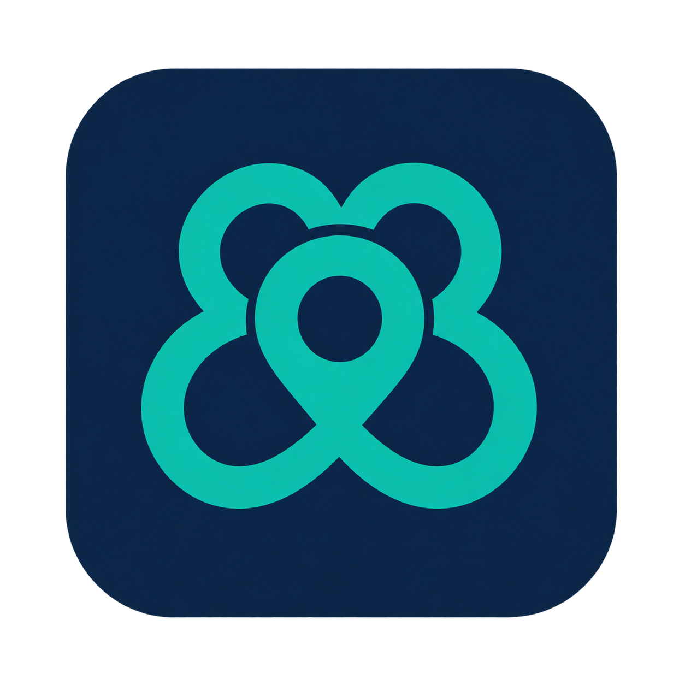
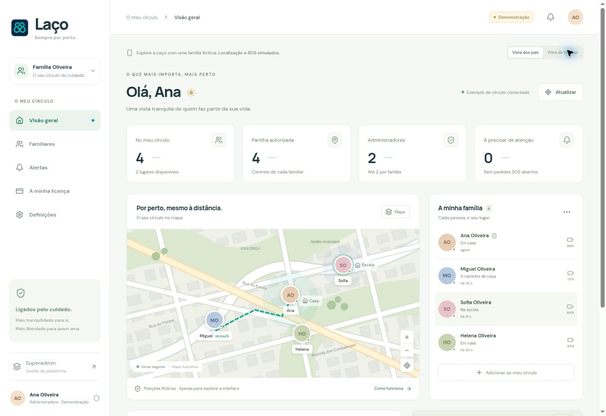

Um círculo no mapa
Localização partilhada com quem cuida de si, com indicação da última atualização.

LaçoSempre por perto.Filhos, pais, avós. Um só lugar para cuidar de quem faz parte da sua vida, mesmo quando está longe.

Uma experiência pensada para os responsáveis e para cada familiar.
Localização partilhada com quem cuida de si, com indicação da última atualização.
Um botão SOS simples para registar um pedido de ajuda para os responsáveis da família.
Bateria do telemóvel e estado da partilha, reunidos no mesmo lugar.
Um administrador principal, um segundo responsável opcional e os familiares que fazem parte da vossa vida. Uma licença à medida do número de pessoas.
Adultos controlam a própria partilha. A partilha dos menores é gerida pelos responsáveis. A demonstração usa dados fictícios. A app móvel está em fase de testes e as notificações dependem de configuração.